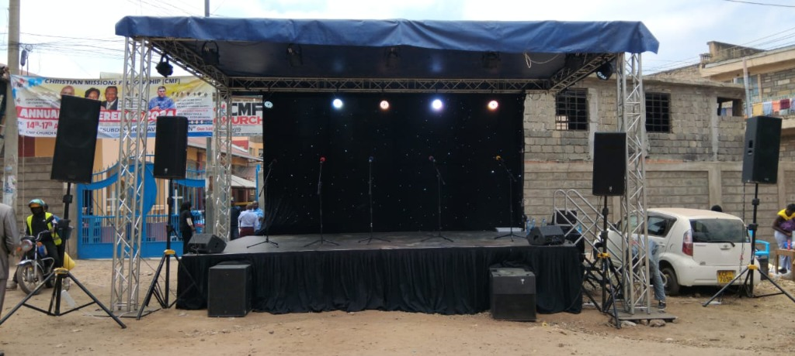
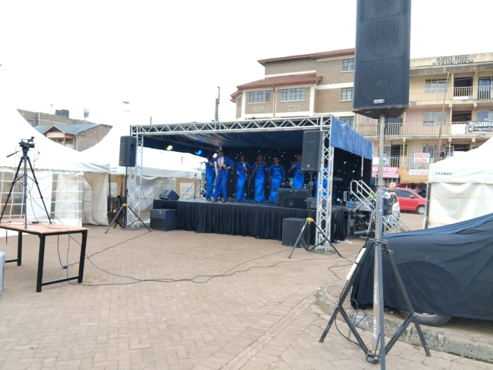
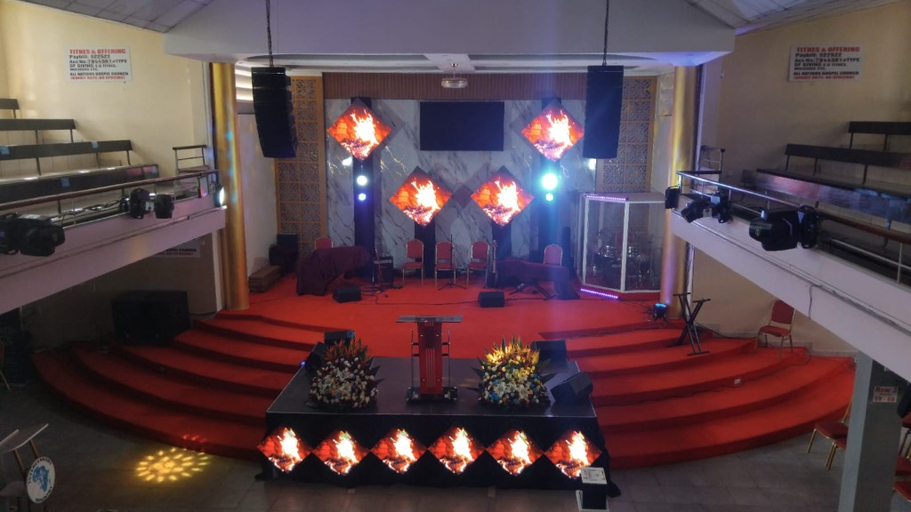
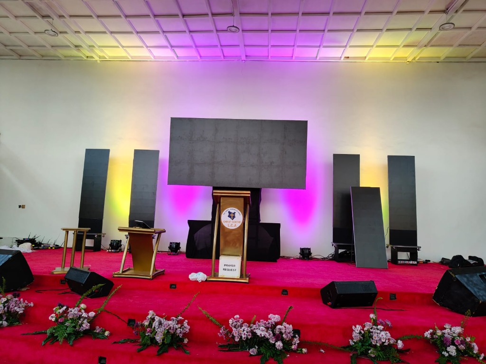
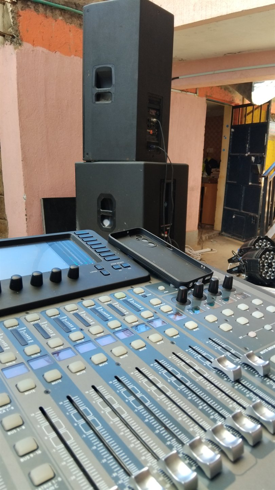
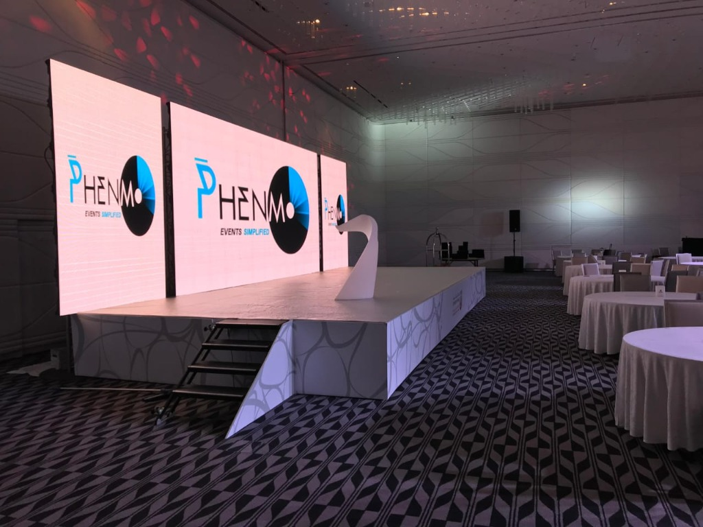
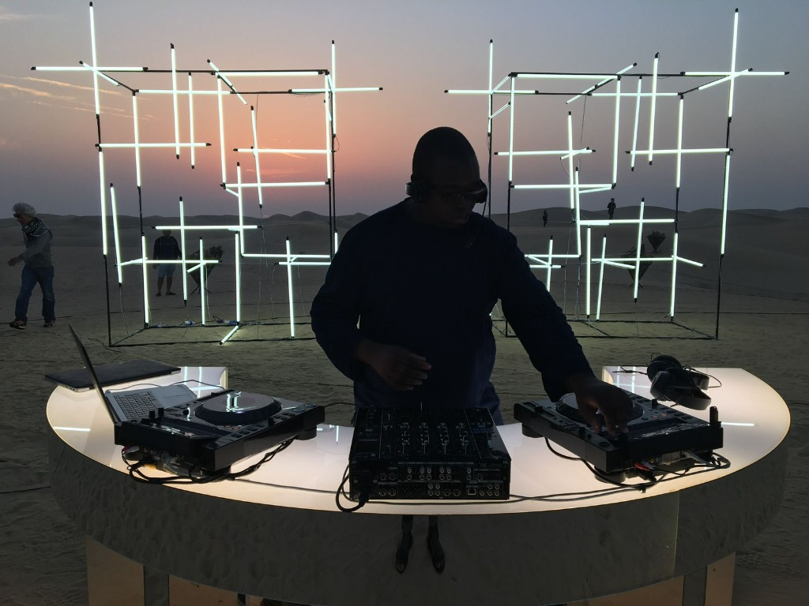
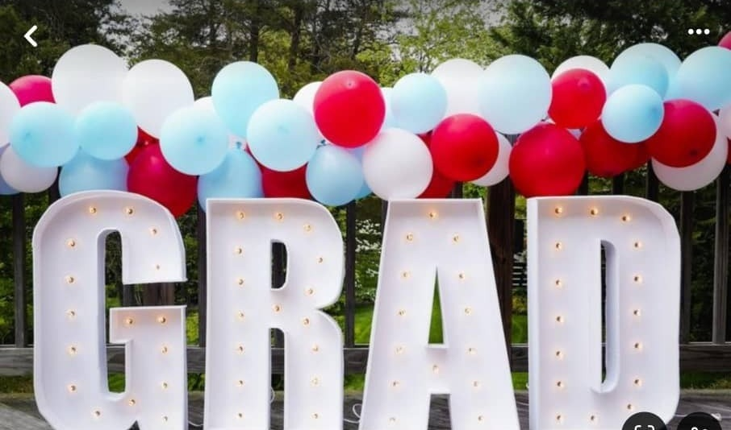

Sound Production
Line Array & Sound Systems
High-powered concert line arrays, digital mixing consoles, wireless microphones, and crystal-clear acoustic engineering for events of all sizes.
EST. 1998 · KENYA'S TRUSTED EVENT & CRUSADE PRODUCTION SPECIALISTS
Phenmo Events delivers high-impact line array sound, heavy-duty elevated staging, P3.9 daylight LED screens, and all-weather production for open-air crusades, church conventions, stadium rallies, and corporate gatherings across Kenya.
“Powering outdoor crusades and church gatherings across Kenya for over two decades — line array sound built for open-air crowds, multi-hour endurance rigs, scripture/lyrics LED display, weatherproof staging, and backup power so the service never stops.”

Line array loudspeaker systems engineered for long-distance vocal projection, ensuring every sermon and worship lyric is heard with crystal clarity across expansive open fields.
Reinforced modular platforms with certified aluminum box truss canopies engineered to safeguard equipment, clergy, and choir from rain, wind, and harsh sun.
High-brightness outdoor LED video screens and live camera displays delivering crisp scripture verses, song lyrics, and real-time feeds visible even in direct afternoon sunlight.
Industrial power distribution units and fail-safe switchgear guaranteeing zero downtime so your service and ministry remain uninterrupted.





WHAT WE DO & DELIVER
Explore our professional sound systems, dynamic lighting, LED screens, luxury décor, and turnkey staging delivered for events across Kenya.
High-powered concert line arrays, digital mixing consoles, wireless microphones, and crystal-clear acoustic engineering for events of all sizes.

Visuals & DisplaysUltra-bright high-definition indoor and outdoor LED video walls for corporate plenaries, sanctuary services, scripture displays, and custom event branding.
 Stage Production
Stage Production
Modular heavy-duty platforms, band risers, secure access stairs, and podium staging designed for safety, stability, and sleek presentation.
 School Events
School Events
Certified aluminum box truss canopies, graduation ceremony stages, starlight starry backdrops, and balloon styling tailored for school prize-giving and academic milestones.
Weather-ready outdoor stage platforms, pitched roof canopies, and crowd-commanding setups tailored for crusades, church conferences, and open-air assemblies.
 Turnkey Solutions
Turnkey Solutions
Full-package turnkey execution coordinating audio, visual, lighting, staging, and technical direction seamlessly from setup to teardown.
Moving heads, LED color washes, stage blinders, starlight twinkle backdrops, and programmed lighting shows that craft unforgettable atmospheres.

EntertainmentExperienced DJs, illuminated curved consoles, Pioneer performance controllers, curated genre playlists, and MC entertainment support to keep the celebration vibrant all night.
Illuminated starlit, 3D kaleidoscopic, and RGB geometric LED dance floor panels that energize guests, creating the ultimate celebration vibe for parties, banquets, and receptions.

Décor & StylingIlluminated marquee letters, organic balloon arches, thematic party backdrops, pagoda tent dressing, and luxury plenary styling for events across Kenya.
VERIFIED FIELD TRACK RECORD
With over two decades of heavy-duty field production across Kenya, our rigs are engineered for multi-hour endurance, expansive open-ground coverage, and flawless reliability without single points of failure.
Multi-cluster concert line array sound systems delivering crystal-clear vocal projection across wide stadium and rural grounds. Dual high-output outdoor LED screens & live displays for daylight scripture feeds, all-weather covered staging, and redundant generator power distribution ensuring 100% uninterrupted ministry services.
Precision acoustic engineering and multi-track digital audio mixing for high-attendance praise and worship conferences. Synchronized stage lighting washes, moving heads, and high-definition sanctuary screen displays creating immersive, reverent worship atmospheres.
Reinforced elevated stage platforms with heavy-duty safety railings, certified box truss canopies, and zoned audio delay towers engineered so every guest, dignitary, and attendee experiences pristine speech clarity across sprawling school and civic grounds.
WHY CHOOSE US
Touring-class line arrays and digital multi-track mixing engineered for expansive open fields, outdoor crusades, and stadium revivals.
Industrial power distro units and dual-generator fail-safe switchgear guaranteeing 100% uninterrupted audio, video, and lighting delivery.
Established in 1998, powering hundreds of outdoor gospel missions, regional church conventions, civic ceremonies, and national tours.
Turnkey logistical readiness deploying heavy staging, aluminum truss canopies, and daylight LED screens across all 47 counties in Kenya.
ABOUT PHENMO EVENTS
Phenmo Events (Est. 1998) is Kenya's trusted technical production company, specializing in open-air gospel crusades, large-scale church conventions, stadium rallies, and high-impact corporate productions.
With 28 years of field endurance across all 47 counties, we engineer concert-grade line array sound, daylight P3.9 LED screen displays, weather-ready elevated staging, and certified aluminum trussing backed by redundant power generation. Every rig is designed so that your sermon, worship lyrics, and presentations reach every attendee with pristine clarity.
GET IN TOUCH
Ready to make your next event unforgettable? Tell us what you need, and we’ll help you plan a smooth, professional setup from start to finish.
TRANSPARENT SPECIFICATIONS
Structured production tiers designed so you can self-qualify your event scope before getting in touch. Every inquiry is backed by our strict commitment to deliver an itemized quotation within 24 hours.
For church services, mid-size conferences, school assemblies & VIP receptions.
For large church conventions, corporate galas, outdoor rallies & graduations.
For open-air crusades, stadium revivals, festivals & nationwide tours.
DEPLOYMENT & REACH
Phenmo Events operates a dedicated mobile logistics fleet with self-contained power and transport. We regularly deploy complete production rigs to school grounds, church campuses, rural fields, and city stadium venues across Kenya.
UAE operations launching soon in Ajman & Dubai. Stay tuned for Gulf region event production updates.